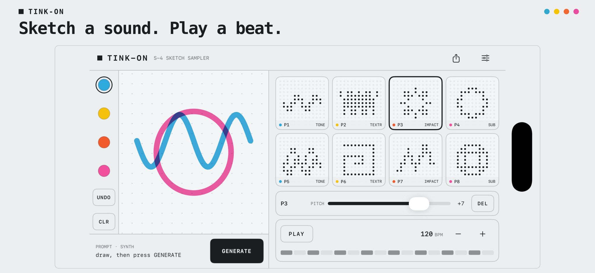
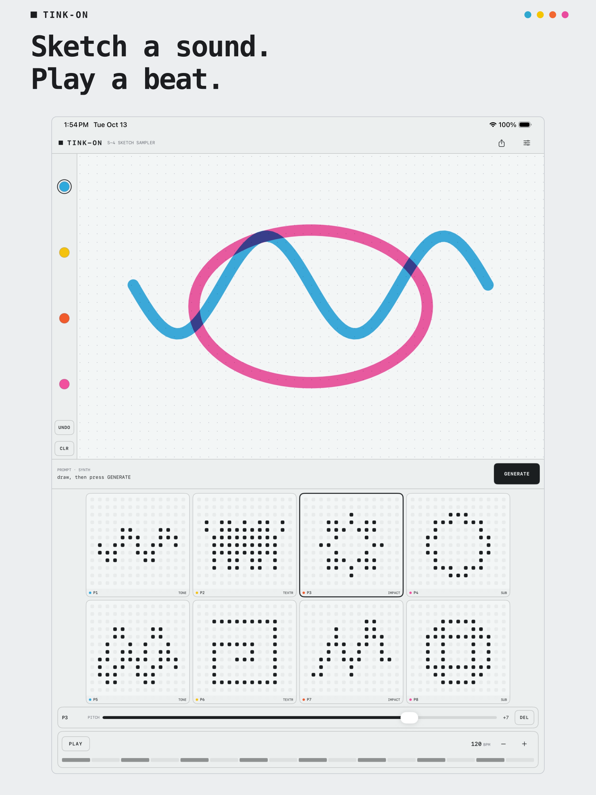

Tink-on — App Store screenshot review
■ TINK-ON / APP STORE
Review draft · Two required sizes. Real app screens, a quiet gray background, the black square mark, and four ink colors. The captured screens show SYNTH mode, which remains available in Settings.
01 / IPHONE LANDSCAPE
2622 × 1206
SVG layout · PNG export
02 / IPAD PORTRAIT
2064 × 2752
SVG layout · PNG export